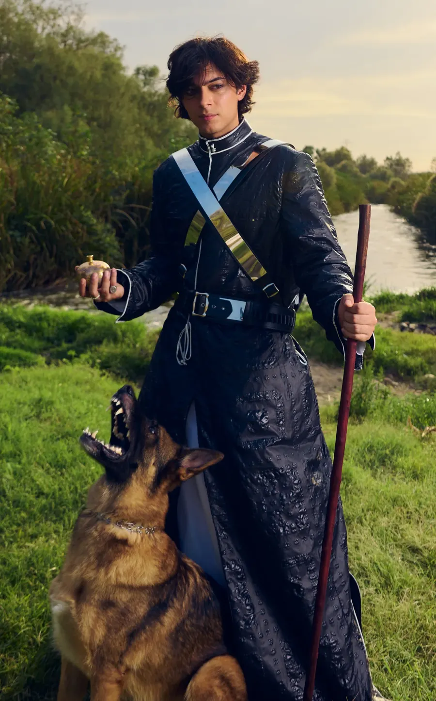

Hi, I’m Greg Recchia
I’m a mixer & co-producer who helps dedicated indie artists capture the raw, the catchy, and the quirky.
Whether it’s tightening up transitions, spicing things up with ear candy, or highlighting the emotional core of your vocals…
…my only goal is that your unique creative voice is heard loud and clear.
Hear for yourself
What the artists are saying

Greg has been the best mixing engineer and producer I’ve worked with, as he has an incredible ability to adapt in order to fit what’s best for the song. His sheer love of music and dedication to his craft makes him a pleasure to work with! He also has a knack for great melodies.
Mishaal Tamer
Let’s make it happen
I’m approachable, easy to work and communicate with. Fill out some brief info and I’ll be in touch with you shortly. Looking forward to hearing from you!
Thanks!
I’ll be in touch with you shortly.